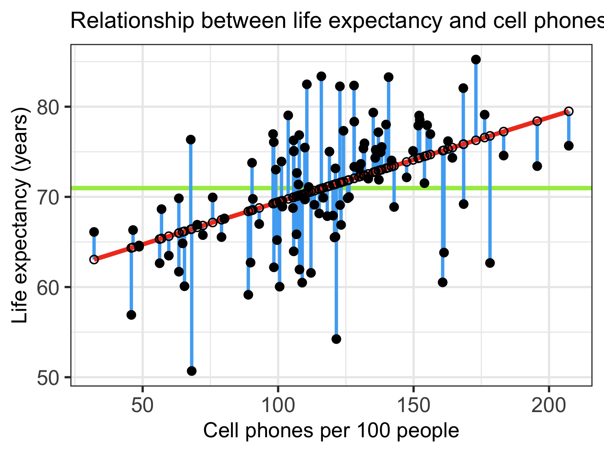
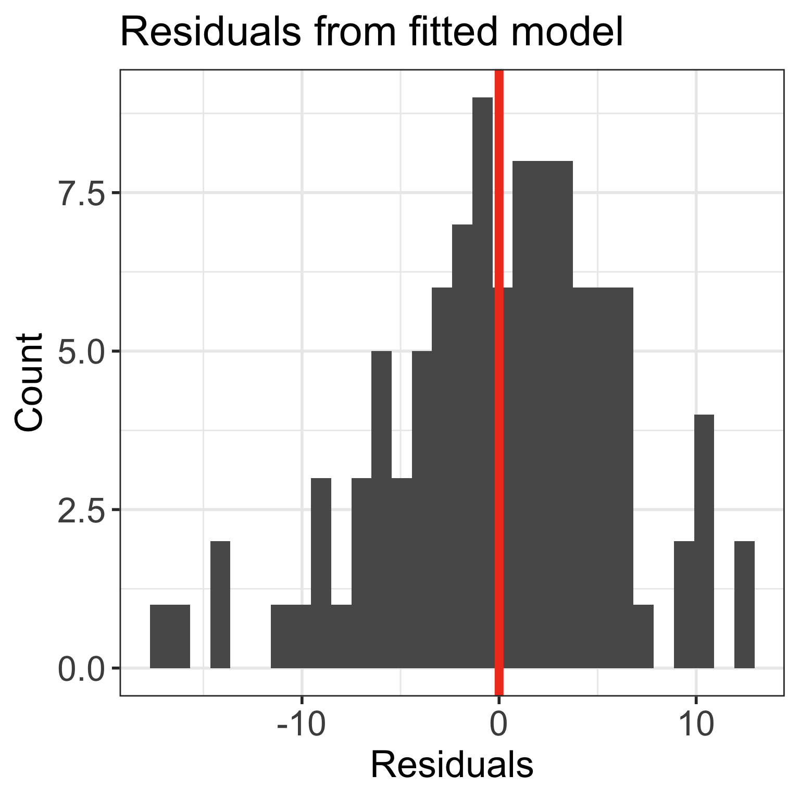
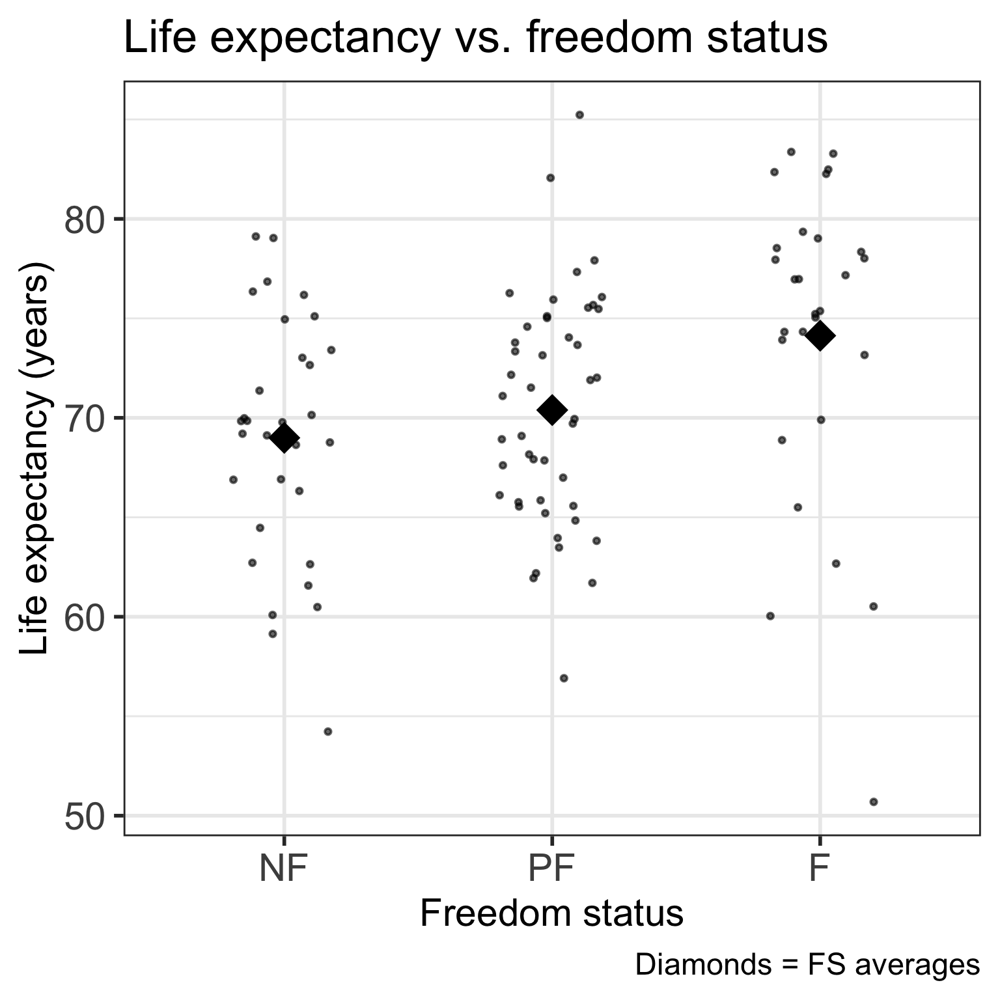
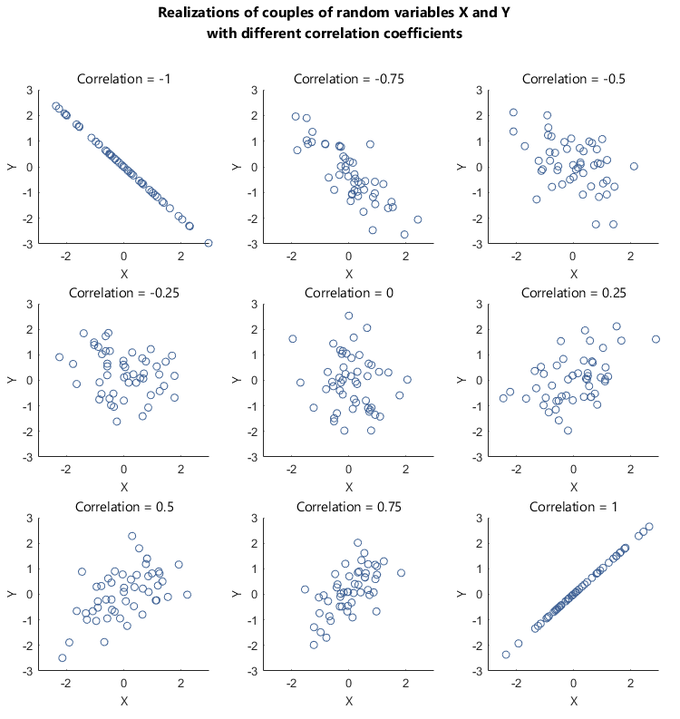

Lesson 6: SLR: More inference
Learning Objectives
Identify different sources of variation in an Analysis of Variance (ANOVA) table
Using the F-test, determine if there is enough evidence that population slope \(\beta_1\) is not 0
Using the F-test, determine if there is enough evidence for association between an outcome and a categorical variable
Calculate and interpret the coefficient of determination
So far in our regression example…
Lesson 3: SLR 1
- Fit regression line
- Calculate slope & intercept
- Interpret slope & intercept
Lesson 4: SLR 2
- Estimate variance of the residuals
- Inference for slope & intercept: CI, p-value
- Finding mean value of Y|X
Lesson 5: Categorical Covariates
- Inference/Interpretation for different categories
Process of regression data analysis


Model Selection
Building a model
Selecting variables
Prediction vs interpretation
Comparing potential models
Model Fitting
Find best fit line
Using OLS in this class
Parameter estimation
Categorical covariates
Interactions
Model Evaluation
- Evaluation of model fit
- Testing model assumptions
- Residuals
- Transformations
- Influential points
- Multicollinearity
Model Use (Inference)
- Inference for coefficients
- Hypothesis testing for coefficients
- Inference for expected \(Y\) given \(X\)
- Prediction of new \(Y\) given \(X\)
Learning Objectives
- Identify different sources of variation in an Analysis of Variance (ANOVA) table
Using the F-test, determine if there is enough evidence that population slope \(\beta_1\) is not 0
Using the F-test, determine if there is enough evidence for association between an outcome and a categorical variable
Calculate and interpret the coefficient of determination
Getting to the F-test
The F statistic in linear regression is essentially a proportion of the variance explained by the model vs. the variance not explained by the model
- Start with visual of explained vs. unexplained variation
- Figure out the mathematical representations of this variation
- Look at the ANOVA table to establish key values measuring our variance from our model
- Build the F-test
Explained vs. Unexplained Variation

\[ \begin{aligned} Y_i - \overline{Y} & = (Y_i - \widehat{Y}_i) + (\widehat{Y}_i- \overline{Y})\\ \text{Total variation} & = \text{Residual variation after regression} + \text{Variation explained by regression} \end{aligned}\]
More on the equation
\[Y_i - \overline{Y} = (Y_i - \widehat{Y}_i) + (\widehat{Y}_i- \overline{Y})\]
- \(Y_i - \overline{Y}\) = the deviation of \(Y_i\) around the mean \(\overline{Y}\)
- (the total amount deviation)
- \(Y_i - \widehat{Y}_i\) = the deviation of the observation \(Y\) around the fitted regression line
- (the amount deviation unexplained by the regression at \(X_i\) ).
- \(\widehat{Y_i}- \overline{Y}\) = the deviation of the fitted value \(\widehat{Y}_i\) around the mean \(\overline{Y}\)
- (the amount deviation explained by the regression at \(X_i\) )

Another way of thinking about the different deviations



Poll Everywhere Question 1
How is this actually calculated for our fitted model? (1/2)
\[ \begin{aligned} Y_i - \overline{Y} & = (Y_i - \widehat{Y}_i) + (\widehat{Y}_i- \overline{Y})\\ \text{Total variation} & = \text{Variation explained by regression} + \text{Residual variation after regression} \end{aligned}\]
\[\begin{aligned} \sum_{i=1}^n (Y_i - \overline{Y})^2 & = \sum_{i=1}^n (\widehat{Y}_i- \overline{Y})^2 + \sum_{i=1}^n (Y_i - \widehat{Y}_i)^2 \\ SSY & = SSR + SSE \end{aligned}\] \[\text{Total Sum of Squares} = \text{Sum of Squares explained by Regression} + \text{Sum of Squares due to Error (residuals)}\]
ANOVA table:
| Variation Source | df | SS | MS | test statistic | p-value |
|---|---|---|---|---|---|
| Regression | \(1\) | \(SSR\) | \(MSR = \frac{SSR}{1}\) | \(F = \frac{MSR}{MSE}\) | |
| Error | \(n-2\) | \(SSE\) | \(MSE = \frac{SSE}{n-2}\) | ||
| Total | \(n-1\) | \(SSY\) |
How is this actually calculated for our fitted model? (2/2)
\[\begin{aligned} \sum_{i=1}^n (Y_i - \overline{Y})^2 & = \sum_{i=1}^n (\widehat{Y}_i- \overline{Y})^2 + \sum_{i=1}^n (Y_i - \widehat{Y}_i)^2 \\ SSY & = SSR + SSE \end{aligned}\] \[\text{Total Sum of Squares} = \text{Sum of Squares explained by Regression} + \text{Sum of Squares due to Error (residuals)}\]
ANOVA table:
| Variation Source | df | SS | MS | test statistic | p-value |
|---|---|---|---|---|---|
| Regression | \(1\) | \(SSR\) | \(MSR = \frac{SSR}{1}\) | \(F = \frac{MSR}{MSE}\) | |
| Error | \(n-2\) | \(SSE\) | \(MSE = \frac{SSE}{n-2}\) | ||
| Total | \(n-1\) | \(SSY\) |
F-statistic: Proportion of variation that is explained by the model to variation not explained by the model
Analysis of Variance (ANOVA) table in R
# Fit regression model:
model1 <- gapm %>% lm(formula = life_exp ~ cell_phones_100)
anova(model1)Analysis of Variance Table
Response: life_exp
Df Sum Sq Mean Sq F value Pr(>F)
cell_phones_100 1 1094.1 1094.10 30.759 2.271e-07 ***
Residuals 103 3663.7 35.57
---
Signif. codes: 0 '***' 0.001 '**' 0.01 '*' 0.05 '.' 0.1 ' ' 1anova(model1) %>% tidy() %>% gt() %>%
tab_options(table.font.size = 40) %>%
fmt_number(decimals = 3)| term | df | sumsq | meansq | statistic | p.value |
|---|---|---|---|---|---|
| cell_phones_100 | 1.000 | 1,094.102 | 1,094.102 | 30.759 | 0.000 |
| Residuals | 103.000 | 3,663.747 | 35.570 | NA | NA |
Learning Objectives
- Identify different sources of variation in an Analysis of Variance (ANOVA) table
- Using the F-test, determine if there is enough evidence that population slope \(\beta_1\) is not 0
Using the F-test, determine if there is enough evidence for association between an outcome and a categorical variable
Calculate and interpret the coefficient of determination
What is the F statistic testing?
- The F statistic is testing whether the model with the predictor variable \(X\) explains significantly more variation in \(Y\) than a model with no predictors (intercept only model)
- In general, the F-test has 3 steps:
- Define the larger (full) model (more coefficients)
- Define the smaller (reduced) model (less coefficients)
- Decide whether to reject the reduced model in favor of the full model
- We “decide” by seeing how much more variation the full model explains compared to the reduced model
- If the full model explains significantly more variation, we reject the reduced model
- In simple linear regression, this is equivalent to testing whether the population slope \(\beta_1\) is equal to 0
F-test vs. t-test for the population slope
The square of a \(t\)-distribution with \(df = \nu\) is an \(F\)-distribution with \(df = 1, \nu\)
\[T_{\nu}^2 \sim F_{1,\nu}\]
- We can use either F-test or t-test to run the following hypothesis test:
Note that the F-test does not support one-sided alternative tests, but the t-test does!
- F-test cannot handle alternatives like \(\beta_1 > 0\) nor \(\beta_2 < 0\)
Planting a seed about the F-test
We can think about the hypothesis test for the slope…
Null \(H_0\)
\(\beta_1=0\)
Alternative \(H_1\)
\(\beta_1\neq0\)
in a slightly different way…
Null model (\(\beta_1=0\))
- \(Y = \beta_0 + \epsilon\)
- Smaller (reduced) model
Alternative model (\(\beta_1\neq0\))
- \(Y = \beta_0 + \beta_1 X + \epsilon\)
- Larger (full) model
In multiple linear regression, we can start using this framework to test multiple coefficient parameters at once
Decide whether or not to reject the smaller reduced model in favor of the larger full model
Cannot do this with the t-test when we have multiple coefficients!
Poll Everywhere Question 2
F-test: general steps for hypothesis test for population slope \(\beta_1\)
Check the assumptions
Set the level of significance
- Often we use \(\alpha = 0.05\)
Specify the null ( \(H_0\) ) and alternative ( \(H_A\) ) hypotheses
- Often, we are curious if the coefficient is 0 or not:
Specify the test statistic and its distribution under the null
- The test statistic is \(F\), and follows an F-distribution with numerator \(df=1\) and denominator \(df=n-2\).
- Calculate the test statistic
The calculated test statistic for \(\widehat\beta_1\) is
\[F = \frac{MSR}{MSE}\]
Calculate the p-value
- We are generally calculating: \(P(F_{1, n-2} > F)\)
Write a conclusion
- Reject: \(P(F_{1, n-2} > F) < \alpha\)
We (reject/fail to reject) the null hypothesis that the slope is 0 at the \(100\alpha\%\) significance level. There is (sufficient/insufficient) evidence that there is significant association between (\(Y\)) and (\(X\)) (p-value = \(P(F_{1, n-2} > F)\)).
Life expectancy example: hypothesis test for population slope \(\beta_1\)
- Steps 1-4 are setting up our hypothesis test: not much change from the general steps
Check the assumptions: We have met the underlying assumptions (checked in our Model Evaluation step)
Set the level of significance
- Often we use \(\alpha = 0.05\)
Specify the null ( \(H_0\) ) and alternative ( \(H_A\) ) hypotheses
- Often, we are curious if the coefficient is 0 or not:
- Specify the test statistic and its distribution under the null
The test statistic is \(F\), and follows an F-distribution with numerator \(df=1\) and denominator \(df=n-2 = 80-2\).
nobs(model1)[1] 105Life expectancy example: hypothesis test for population slope \(\beta_1\) (2/4)
- Calculate the test statistic
anova_tab = anova(model1) %>% tidy()
anova_tab %>% gt() %>% tab_options(table.font.size = 40)| term | df | sumsq | meansq | statistic | p.value |
|---|---|---|---|---|---|
| cell_phones_100 | 1 | 1094.102 | 1094.10190 | 30.75881 | 2.271176e-07 |
| Residuals | 103 | 3663.747 | 35.57035 | NA | NA |
Option 1: Calculate the test statistic using the values in the ANOVA table
\[F = \frac{MSR}{MSE} = \frac{1094.1019013}{35.5703546} = 30.759\]
Option 2: Get the test statistic value (F) from the ANOVA table
\[F = 30.759\]
F_stat = anova_tab$statistic[1]
I tend to skip this step because I can do it all with step 6
Life expectancy example: hypothesis test for population slope \(\beta_1\) (3/4)
- Calculate the p-value
As per Step 4, test statistic \(F\) can be modeled by a \(F\)-distribution with \(df_1 = 1\) and \(df_2 = n-2\).
- We had 105 countries’ data, so \(n=105\)
Option 1: Use
pf()and our calculated test statistic
# p-value is ALWAYS the right tail for F-test
n = nobs(model1)
pf(F_stat, df1 = 1, df2 = n-2, lower.tail = FALSE)[1] 2.271176e-07- Option 2: Use the ANOVA table
anova(model1) %>% tidy() %>% gt() %>%
tab_options(table.font.size = 40)| term | df | sumsq | meansq | statistic | p.value |
|---|---|---|---|---|---|
| cell_phones_100 | 1 | 1094.102 | 1094.10190 | 30.75881 | 2.271176e-07 |
| Residuals | 103 | 3663.747 | 35.57035 | NA | NA |
Life expectancy example: hypothesis test for population slope \(\beta_1\) (4/4)
- Write a conclusion
We reject the null hypothesis that the slope is 0 at the \(5\%\) significance level. There is sufficient evidence that there is significant association between life expectancy and cell phones per 100 people (p-value < 0.0001).
Did you notice anything about the p-value?
The p-value of the t-test and F-test are the same!!
- For the t-test:
tidy(model1) %>% gt() %>%
tab_options(table.font.size = 40)| term | estimate | std.error | statistic | p.value |
|---|---|---|---|---|
| (Intercept) | 60.04051297 | 2.05566959 | 29.207278 | 1.215444e-51 |
| cell_phones_100 | 0.09383818 | 0.01691978 | 5.546063 | 2.271176e-07 |
- For the F-test:
anova(model1) %>% tidy() %>% gt() %>%
tab_options(table.font.size = 40)| term | df | sumsq | meansq | statistic | p.value |
|---|---|---|---|---|---|
| cell_phones_100 | 1 | 1094.102 | 1094.10190 | 30.75881 | 2.271176e-07 |
| Residuals | 103 | 3663.747 | 35.57035 | NA | NA |
This is true when we use the F-test for a single coefficient!
Learning Objectives
Identify different sources of variation in an Analysis of Variance (ANOVA) table
Using the F-test, determine if there is enough evidence that population slope \(\beta_1\) is not 0
- Using the F-test, determine if there is enough evidence for association between an outcome and a categorical variable
- Calculate and interpret the coefficient of determination
Testing association between continuous outcome and categorical variable
- Before we used the F-test (or t-test) to determine association between two continuous variables
- We CANNOT use the t-test to determine association between a continuous outcome and a multi-level categorical variable
- We CAN use the F-test to do this!
- We can use the t-test or F-test for a categorical variable with only 2 levels
Poll Everywhere Question 3
We can extend our look at the F-test
We can create a hypothesis test for more than one coefficient at a time…
Null \(H_0\)
\(\beta_1=\beta_2=0\)
Alternative \(H_1\)
\(\beta_1\neq0\) and/or \(\beta_2\neq0\)
in a slightly different way…
Null model
- \(Y = \beta_0 + \epsilon\)
- Smaller (reduced) model
Alternative* model
- \(Y = \beta_0 + \beta_1 X_1 + \beta_2 X_2 + \epsilon\)
- Larger (full) model
*This is not quite the alternative, but if we reject the null, then this is the model we move forward with
Let’s say we want to test the association between life expectancy and freedom status
\[\begin{aligned} \widehat{\textrm{LE}} = & \widehat\beta_0 + \widehat\beta_1 \cdot I(\text{PF}) + \\ & \widehat\beta_2 \cdot I(\text{F}) \\ \widehat{\textrm{LE}} = & 68.99 + 1.4 \cdot I(\text{PF}) + \\ &5.14 \cdot I(\text{F}) \end{aligned}\]
- We need to figure out if the model with freedom status explains significantly more variation than the model without freedom status!

F-test: general steps for hypothesis test for categorical variable
Check the assumptions
Set the level of significance
- Often we use \(\alpha = 0.05\)
Specify the null ( \(H_0\) ) and alternative ( \(H_A\) ) hypotheses
- Often, we are curious if the coefficienta are 0 or not:
Specify the test statistic and its distribution under the null
- The test statistic is \(F\), and follows an F-distribution with numerator \(df=1\) and denominator \(df=n-(k+1)\)
- Calculate the test statistic
The calculated test statistic for \(\beta\)s is
\[F = \frac{MSR}{MSE}\]
Calculate the p-value
- We are generally calculating: \(P(F_{1, n-(k+1)} > F)\)
Write a conclusion
- Reject: \(P(F_{1, n-2} > F) < \alpha\)
We (reject/fail to reject) the null hypothesis that the slope is 0 at the \(100\alpha\%\) significance level. There is (sufficient/insufficient) evidence that there is significant association between (\(Y\)) and (\(X\)) (p-value = \(P(F_{1, n-(k+1)} > F)\)).
Life expectancy example: hypothesis test for freedom status (1/4)
- Steps 1-4 are setting up our hypothesis test: not much change from the general steps
Check the assumptions: We have met the underlying assumptions (checked in our Model Evaluation step)
Set the level of significance
- Often we use \(\alpha = 0.05\)
Specify the null ( \(H_0\) ) and alternative ( \(H_A\) ) hypotheses
- We are testing if the FS is associated with life expectancy:
- Specify the test statistic and its distribution under the null
The test statistic is \(F\), and follows an F-distribution with numerator \(df=k\) and denominator \(df=n-(k+1) = 105-(2+1)\)
nobs(model1)[1] 105Life expectancy example: hypothesis test for freedom status (2/4)
- Calculate the test statistic
model2 <- gapm %>% lm(formula = life_exp ~ freedom_status)
anova_tab2 = anova(model2) %>% tidy()
anova_tab2 %>% gt() %>% tab_options(table.font.size = 40)| term | df | sumsq | meansq | statistic | p.value |
|---|---|---|---|---|---|
| freedom_status | 2 | 415.9368 | 207.96841 | 4.885585 | 0.009414324 |
| Residuals | 102 | 4341.9116 | 42.56776 | NA | NA |
Option 1: Calculate the test statistic using the values in the ANOVA table
\[F = \frac{MSR}{MSE} = \frac{207.9684098}{42.5677608} = 4.886\]
Option 2: Get the test statistic value (F) from the ANOVA table
\[F = 4.886\]
F_stat2 = anova_tab2$statistic[1]
I tend to skip this step because I can do it all with step 6
Life expectancy example: hypothesis test for freedom status (3/4)
- Calculate the p-value
As per Step 4, test statistic \(F\) can be modeled by a \(F\)-distribution with \(df_1 = 2\) and \(df_2 = n-3\).
- We had 105 countries’ data, so \(n=105\)
Option 1: Use
pf()and our calculated test statistic
# p-value is ALWAYS the right tail for F-test
n = nobs(model1)
pf(F_stat2, df1 = 2, df2 = n-3, lower.tail = FALSE)[1] 0.009414324- Option 2: Use the ANOVA table
anova(model2) %>% tidy() %>% gt() %>%
tab_options(table.font.size = 40)| term | df | sumsq | meansq | statistic | p.value |
|---|---|---|---|---|---|
| freedom_status | 2 | 415.9368 | 207.96841 | 4.885585 | 0.009414324 |
| Residuals | 102 | 4341.9116 | 42.56776 | NA | NA |
Life expectancy example: hypothesis test for freedom status (4/4)
- Write a conclusion
We reject the null hypothesis that both coefficients are equal to 0 at the \(5\%\) significance level. There is sufficient evidence that there is association between life expectancy and the country’s freedom status (p-value = 0.009).
Learning Objectives
Identify different sources of variation in an Analysis of Variance (ANOVA) table
Using the F-test, determine if there is enough evidence that population slope \(\beta_1\) is not 0
Using the F-test, determine if there is enough evidence for association between an outcome and a categorical variable
- Calculate and interpret the coefficient of determination
Correlation coefficient from 511
Correlation coefficient \(r\) can tell us about the strength of a relationship between two continuous variables
If \(r = -1\), then there is a perfect negative linear relationship between \(X\) and \(Y\)
If \(r = 1\), then there is a perfect positive linear relationship between \(X\) and \(Y\)
If \(r = 0\), then there is no linear relationship between \(X\) and \(Y\)
Note: All other values of \(r\) tell us that the relationship between \(X\) and \(Y\) is not perfect. The closer \(r\) is to 0, the weaker the linear relationship.

Correlation coefficient (\(r\) or \(R\))
The (Pearson) correlation coefficient \(r\) of variables \(X\) and \(Y\) can be computed using the formula:
\[\begin{aligned} r & = \frac{\sum_{i=1}^n (X_i - \overline{X})(Y_i - \overline{Y})}{\Big(\sum_{i=1}^n (X_i - \overline{X})^2 \sum_{i=1}^n (Y_i - \overline{Y})^2\Big)^{1/2}} \\ & = \frac{SSXY}{\sqrt{SSX \cdot SSY}} \end{aligned}\]
we have the relationship
\[\widehat{\beta}_1 = r\frac{SSY}{SSX},\ \ \text{or},\ \ r = \widehat{\beta}_1\frac{SSX}{SSY}\]
Coefficient of determination: \(R^2\)
It can be shown that the square of the correlation coefficient \(r\) is equal to
\[R^2 = \frac{SSR}{SSY} = \frac{SSY - SSE}{SSY}\]
- \(R^2\) is called the coefficient of determination.
- Interpretation: The proportion of variation in the \(Y\) values explained by the regression model
- \(R^2\) measures the strength of the linear relationship between \(X\) and \(Y\):
- \(R^2 = \pm 1\): Perfect relationship
- Happens when \(SSE = 0\), i.e. no error, all points on the line
- \(R^2 = 0\): No relationship
- Happens when \(SSY = SSE\), i.e. using the line doesn’t not improve model fit over using \(\overline{Y}\) to model the \(Y\) values.
- \(R^2 = \pm 1\): Perfect relationship
Life expectancy example: correlation coeffiicent \(r\) and coefficient of determination \(R^2\)
We can find the correlation coefficient and square it:
r = cor(x = gapm$life_exp,
y = gapm$cell_phones_100,
use = "complete.obs")
r^2[1] 0.2299573We can pull the coefficient of determination from the model summary:
model1_sum = summary(model1)
r_squared = model1_sum$r.squared
r_squared[1] 0.2299573Interpretation
23% of the variation in countries’ life expectancy is explained by the linear model with number of cell phones per 100 people as the independent variable.
What does \(R^2\) not measure?
\(R^2\) is not a measure of the magnitude of the slope of the regression line
- Example: can have \(R^2 = 1\) for many different slopes!!
\(R^2\) is not a measure of the appropriateness of the straight-line model
- Example: figure